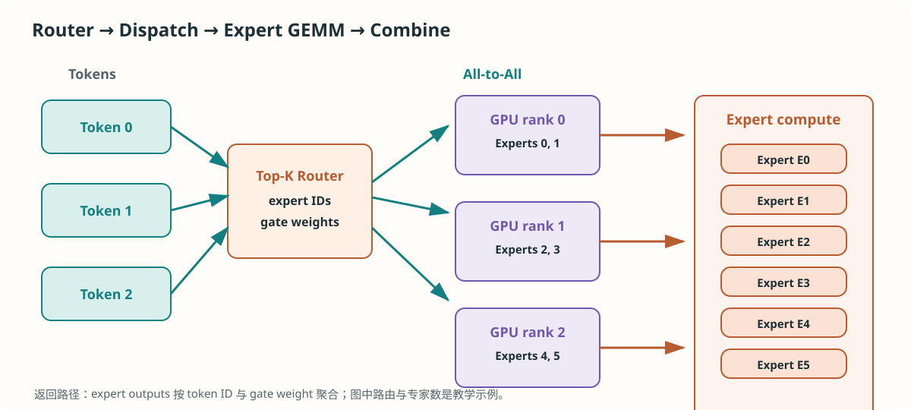
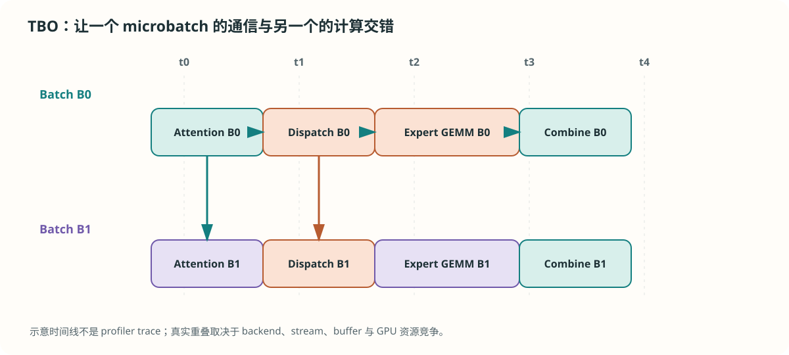

第 12 章 · MoE 与专家并行
MoE Expert Parallelism：从 Top-K 路由到 DeepEP All-to-All
拆开 Router、Token Dispatch、Expert GEMM、Combine、TBO/SBO 与 EPLB，理解稀疏专家推理的通信关键路径。
MoE 推理并不是每张 GPU 都运行所有专家。Router 为每个 token 选择 Top-K experts，token hidden states 再被送到专家驻留的 rank，经过专家计算后返回并按 gate weight 合并。系统难题是让路由、All-to-All 与 grouped GEMM 协同，同时避免热门专家拖慢整个 batch。
读完本章，你应该能
- 推导 Top-K expert IDs 与 gate weights
- 解释 dispatch / expert compute / combine
- 理解 SGLang 如何解耦 dispatcher 与 MoeRunner
- 区分 TBO、SBO、EPLB 与 backend 边界。
1. MoE 为什么需要跨 GPU 通信？
MoE 并不是让每个 token 通过所有 FFN。Router 为每个 token 选择 Top-K experts，只有选中的专家参与这次前向。当专家权重分布在不同 GPU，token hidden states 必须被送到专家所在 rank。MoE 的关键路径因此包含路由、dispatch、专家计算和 combine。
2. Router 先决定 token 去哪里
Router 输出 expert IDs 与 gate weights。ID 决定 token 去哪个专家，weight 决定输出如何合并；二者不能混为一谈。

3. Dispatch 与 Combine：数据如何跨 rank 移动？
Dispatcher 按目标 expert / rank 对 token hidden states 分组，再发送 payload 与必要 metadata。专家计算完成后，combine 根据 token 身份和 gate weight 聚合回原顺序。All-to-All 的通信量取决于 token 数、Top-K、hidden size、dtype、rank 拓扑和 backend。
CPU toy 实验会计算每个 rank 接收哪些 token，并演示加权合并；它不会运行真实 NCCL / DeepEP。
4. SGLang 如何解耦 EP 通信与计算
SGLang 的 EP 框架把 Router、Dispatcher、MoeRunner 分开：Dispatcher 负责 dispatch / combine；MoeRunner 负责专家计算；中间可有 pre-permute / post-permute，也可能由特定 backend 使用 fused function。通信 backend 与 grouped-GEMM runner 因而可以独立演进。
官方文档列出 DeepEP、Mooncake、NIXL-EP、MORI、FlashInfer 等通信实现，以及 Triton、DeepGEMM、AITER、FlashInfer 等计算路径。兼容性受 EP/TP 组合、设备、量化、模型结构和 decode/prefill 模式约束。
5. 通信与计算如何重叠？
Two-Batch Overlap（TBO）把 batch 拆成 microbatches，在一个 microbatch 做 expert GEMM 时，另一个可以推进 attention 或 dispatch。Single-Batch Overlap（SBO）通过 dispatcher hooks 将共享专家等计算与 dispatch/combine 交叠。

6. 专家负载不均衡：平均值为什么会骗人？
平均每个专家收到的 token 数可能很小，但单个热门专家仍可能收到大量 token；单步完成时间受最忙专家或 rank 约束。一个教学诊断比率为：
这不是 SGLang 唯一的官方负载度量。EPLB 可根据专家激活统计调整专家放置 / 复制策略，但重排涉及权重搬运、通信和一致性成本。
7. 数学：专家输出如何回到 token？
一个 token 的 MoE 输出可抽象为所选专家输出的 gate-weighted sum：
上式说明聚合语义；真实实现还涉及 permutation、padding、量化、grouped GEMM 与 backend metadata。
8. 源码与研究入口
- SGLang Expert Parallelism：backend、TBO/SBO 与 EPLB。
- DeepEP dispatcher。
- MoeRunner。
- DeepEP repository。
- DeepSeek-V3 Technical Report。
9. 交互：跟踪一个 token
MoE token lifecycle
Route：router 选出 Top-K expert IDs 与 gate weights；此时尚未跨 rank 发送 token。
Dispatch：hidden states 按 expert 驻留 rank 分组，并通过 All-to-All 传输。
Expert GEMM：rank 对收到的 token 分组执行专家计算，可使用 grouped GEMM / fused kernel。
Combine：专家输出按 token ID 与 gate weight 聚合，恢复原始 token 顺序。
10. 限制与性能判断
- EP 不天然更快；小 batch 下通信成本可能超过稀疏计算收益。
- 不同 backend 对 EP/TP 组合有约束，不能跨设备照搬。
- Prefill 常偏向高吞吐 dispatch，Decode 对低延迟和 CUDA Graph 更敏感；要按当前版本核对。
- 负载均衡还受专家算子、量化路径、共享专家和 rank 互联影响。
公平评测应固定模型、精度、GPU 拓扑、输入长度、并发、Top-K 与 backend，记录 tokens/s、TPOT、P95/P99、rank utilization 和通信时间。
参考资料与版本边界
实现快照：sgl-project/sglang@ac0380c7faf9cece3ca32ffe75815af7c585acea。示意 token / expert / rank 数量均为 toy，不是 GPU benchmark。